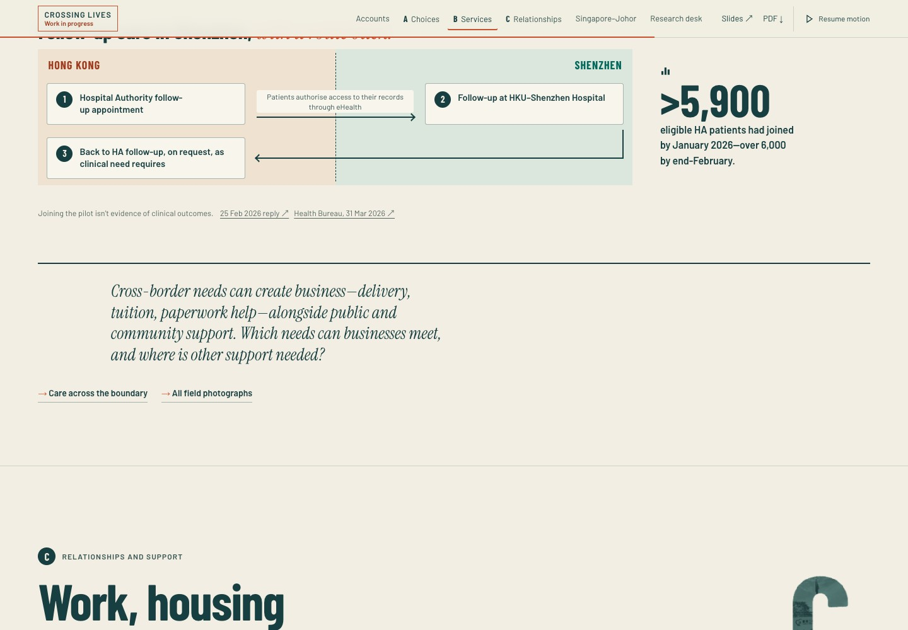
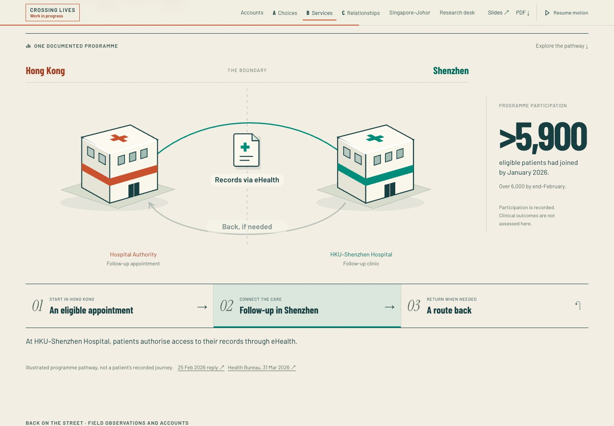
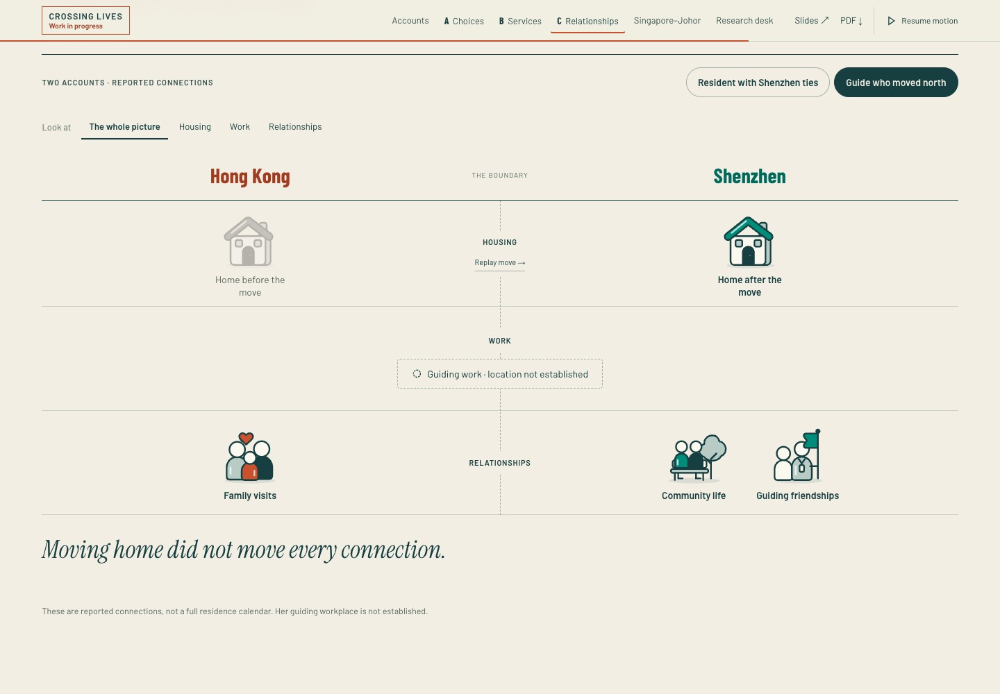
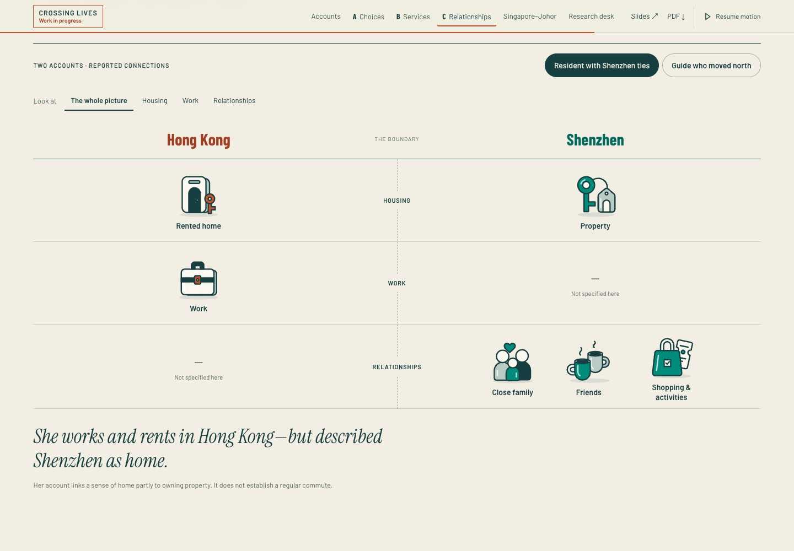
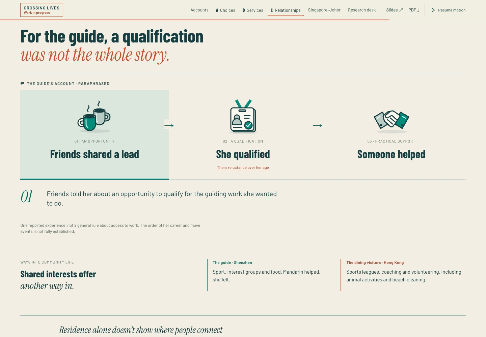
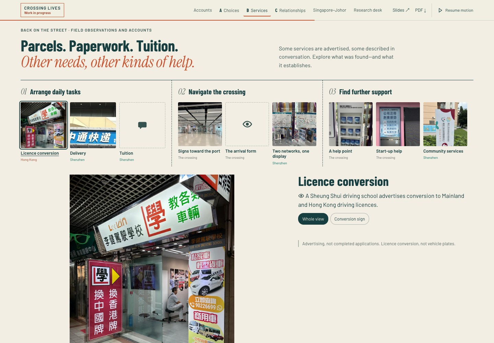
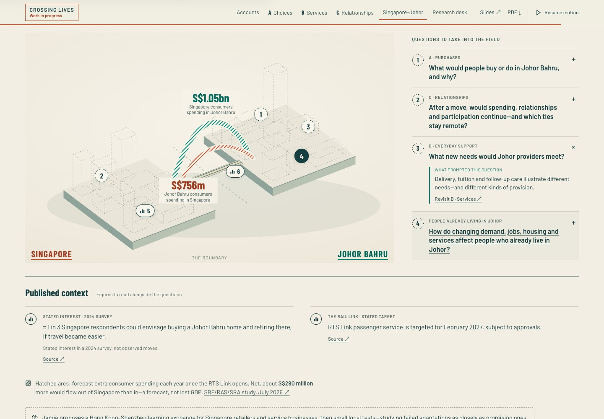

6 November 2026 · For Bob’s review
Make the connections visible.
This review preserves the November 6 design. Its interactive preview is frozen; the current website incorporates Jamie’s later feedback.
Follow eligible care, records by permission and a conditional route back.

The preview runs a frozen copy of the November 6 candidate. Acknowledge its Work in progress notice to begin. Motion respects your device setting and the website’s pause control.
Recorded interactions
Recorded 6 November · historical interactionsCaptured states












Screenshots: Chrome, desktop 1440 × 1000 and phone viewport 390 × 844, DPR 1, reduced motion. Phone views are emulated. Open any image at full size.